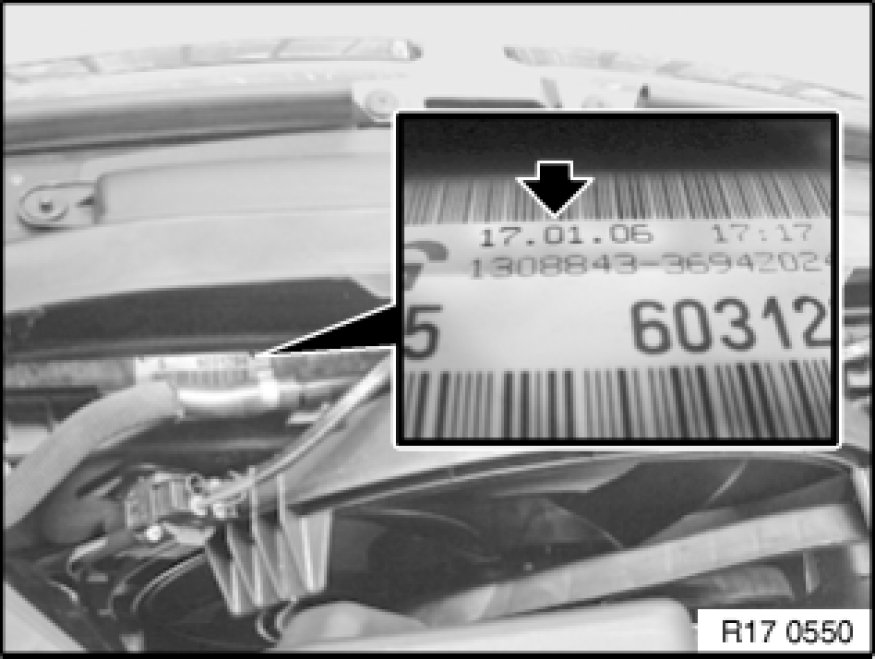
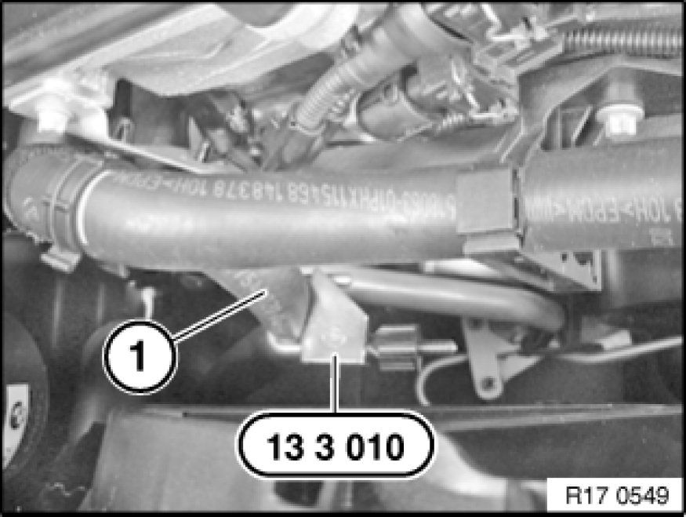
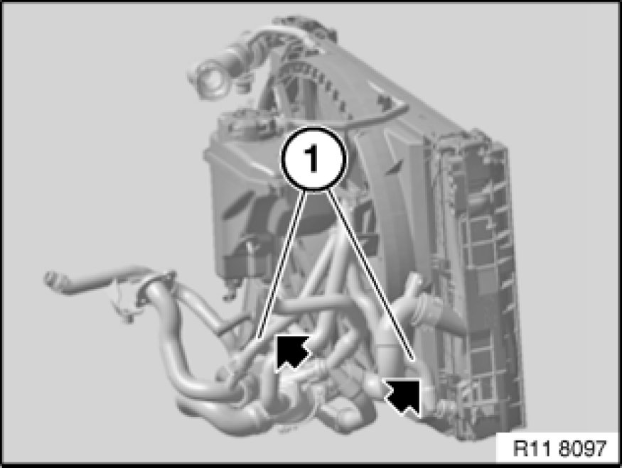
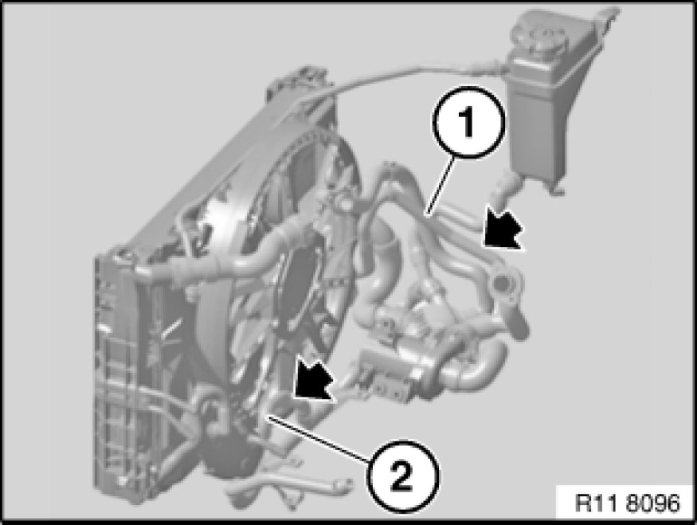

Radiator: Testing and Inspection
17 00 515 - Checking function of radiator and heating system

Special tools required:
- 13 3 010 13 3 010 Hose Clip

Warning!
Danger of scalding!
Only carry out work on cooling system after engine has cooled down.

Necessary preliminary tasks:
- Switch off ignition.
- Remove air duct.
- Remove fan cowl with electronic fan.

Check production date.

Clamp off low-temperature feed lines with special tool 13 3 010 13 3 010 Hose Clip.
Function test:
Observe diagnosis instructions.

Check function of radiator.
Clamp off low-temperature feed line (1) at coolant pump outlet or radiator inlet with special tool 13 3 010 13 3 010 Hose Clip (see arrows).

Automatic transmission only
Check function of heat exchanger.
Clamp off low-temperature feed line (1) at coolant pump outlet with special tool 13 3 010 13 3 010 Hose Clip (see arrow).
Clamp off low-temperature feed line (2) at oil-coolant heat exchanger with special tool 13 3 010 13 3 010 Hose Clip (see arrow).

Check heating and cooling circuits in accordance with diagnosis instruction.